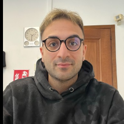

Full Stack Developer / AI & Automation
I turn complex business problems into clean, automated solutions — from AI-powered workflows to full-stack web applications.

I'm a developer, but my strongest skill is understanding what a client actually needs — which is often different from what they describe at first.
I started my career at 20 building software for infomobility displays. Clients would call with a problem, and I'd translate it into something concrete: a script, an interface, an automation. That's where I learned that listening well is just as valuable as knowing how to code.
Today I work with .NET, C#, Blazor and SQL Server, and I'm increasingly focused on AI integration — automating repetitive tasks like manual data entry, PDF processing, and time-consuming daily workflows.
I'm available for freelance projects: automating business processes, integrating AI into existing workflows, or building web applications from scratch. Based in Vicenza, Italy — available remotely worldwide.
Building and maintaining complex industrial software within an agile team. Leading modernization of legacy systems to a modern .NET stack.
Managed IT operations for a precious metals alloy manufacturer. Developed the company website and an internal project management platform.
Customized embedded software for infomobility display hardware deployed across Europe. Maintained the fleet monitoring platform and automated production testing.
dms.gds.com)Repaired and configured devices for private clients and businesses. Managed network infrastructure and provided remote and on-site IT support for SMEs.
A Python tool that extracts structured data from PDF documents — invoices, contracts, reports — using an LLM. Outputs clean JSON or CSV. Bring your own API key.
Open to freelance projects — business process automation, AI integration, full-stack web development. Get in touch and let's build something.